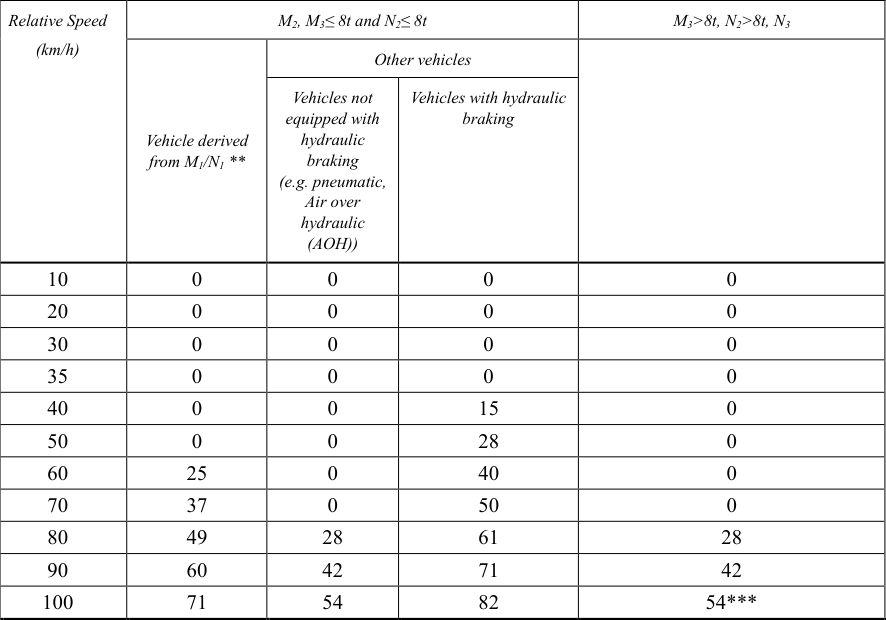
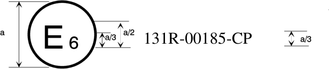
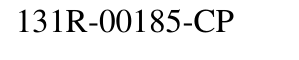

Uniform provisions concerning the approval of motor vehicles with regard to the Advanced Emergency Braking System (AEBS) for M2, M3, N2 and N3 vehicles
11試験実施機関Names and addresses of the Technical Services responsible for conducting approval tests and
11承認試験機関と型式認証当局の名称と住所。Names and addresses of the Technical Services responsible for conducting approval tests and▼
English (Original)
Names and addresses of the Technical Services responsible for conducting approval tests and of Type Approval Authorities .......................................................................................................... 20
日本語訳
承認試験を実施する責任を負う技術機関および型式認証当局の名称および住所。
2定義Definitions
2AEBSは前方衝突を自動検出し、警告とブレーキで衝突を回避・軽減する。Introduction▼
English (Original)
Introduction “The original intention of this Regulation was to establish uniform provisions for Advanced Emergency Braking Systems (AEBS) fitted to motor vehicles of the Categories M2, M3, N2 and N3 primarily used under monotonous highway driving conditions. This version extends the scope to new scenarios like city driving. While, in general, those vehicle categories would benefit from the fitment of an AEBS, there are sub-groups where the benefit is rather uncertain because of their specific usage (e.g. buses with standing passengers i.e. Classes I, II and A, Category G vehicles, construction vehicles, etc.). Regardless from the benefit, there are other sub-groups where the installation of AEBS would be technically difficult or not feasible (e.g. position of the sensor on vehicles of Category G, construction vehicles mainly used in off-road areas and gravel tracks, special purpose vehicles and vehicles with front mounted equipment, etc.). In some cases, there may be a possibility of false emergency braking events because of vehicle design constraints. AEBS are designed to deal with specific critical traffic situations with an operational intervention as an assistance system for the driver. This Regulation cannot cover all the traffic conditions and infrastructure features in the type- approval process; this Regulation recognises that the performances required in it cannot be achieved in all conditions (vehicle condition, road adhesion, weather conditions, noise of external radar sources, deteriorated road infrastructure and traffic scenarios etc. may affect the system performances). While the system should meet the expected performance under the specified conditions, actual conditions and features in the real world may additionally influence performance and should not result in false warnings or false braking to the extent that they encourage the driver to switch off the system. Some other conditions affecting the performance may indeed be encountered in the future (e.g. new infrastructure type). The list may then be upgraded to acknowledge for the gained experience. The system shall automatically detect a potential forward collision with another vehicle and with a pedestrian crossing the path of the vehicle, provide the driver with a warning and activate the vehicle braking system to decelerate the vehicle with the purpose of avoiding or mitigating the severity of a collision. The system shall only operate in driving situations where braking will avoid or mitigate the severity of an accident and shall avoid intervening in uncritical driving situations. In the case of a failure in the system, the safe operation of the vehicle shall not be endangered. The system shall provide as a minimum an acoustic or haptic warning, which may also be a sharp deceleration, so that an inattentive driver is made aware of a critical situation, if time permits. There are, however, situations where a warning cannot be given in time for the driver to appropriately react, such as collisions with pedestrian or with strongly decelerating preceding vehicles. In these cases, the warning may be given at the time that an emergency brake intervention starts. During any action taken by the system (the warning and emergency braking phases), the driver can, at any time through a conscious action like an accelerator kick-down or a swerving action that results in enough change of direction not to hit the target, take control and override the system. While from a traffic safety perspective, it would be appreciable to require automated collision avoidance for all heavy vehicles up to their maximum driving speed, the prevention of false positive reactions limits the current maximum performance. This revision of UN Regulation No. 131 is accounting 3 for the fact that active safety systems in general have made a giant leap over the 2010’s with respect to their performance in avoiding or mitigating accidents with an ever-increasing variety of collision partners. There should be an ambition to produce AEBS for heavy vehicles that go beyond what is required in this version of UN Regulation No. 131, namely: to avoid accidents with other vehicles up to the maximum driving speed, to avoid accidents with pedestrians up to speeds comparable to those required from passenger cars (see UN Regulation No. 152) and to avoid collisions with bicycles. To support this level of ambition, the state of technology should be closely monitored and requirements in this Regulation regularly adapted as appropriate.
Scope This Regulation applies to the approval* of vehicles of Category M2, M3, N2 and N3 0F1 with regard to an on-board system to: (a) Avoid or mitigate the severity of a rear-end in lane collision with a preceding vehicle, (b) Avoid or mitigate the severity of an impact with a pedestrian. * For vehicles of category M2, and for those of category M3/N2 with a maximum weight below or equal to 8t, equipped with hydraulic braking, Contracting Parties that are signatories to both UN Regulation No. 152 and this Regulation shall recognize approvals to either Regulation as equally valid.
2.1AEBSは前方衝突を自動検出し、ブレーキで衝突を回避・軽減するシステムをいう。"Advanced Emergency Braking System (AEBS)" means a system which can▼
English (Original)
"Advanced Emergency Braking System (AEBS)" means a system which can automatically detect an imminent forward collision and activate the vehicle braking system to decelerate the vehicle with the purpose of avoiding or mitigating a collision.
2.4先進緊急ブレーキシステムに関する車両型式とは、性能に影響する特性やシステムの種類・設計が同一の車両分類をいう。"Vehicle Type with Regard to its Advanced Emergency Braking System"▼
English (Original)
"Vehicle Type with Regard to its Advanced Emergency Braking System" means a category of vehicles which do not differ in such essential aspects as: (a) Vehicle features which significantly influence the performances of the Advanced Emergency Braking System; (b) The type and design of the Advanced Emergency Braking System.
2.7車両ターゲットとは、車両を模したターゲットをいう。"Vehicle Target" means a target that represents a vehicle▼
English (Original)
"Vehicle Target" means a target that represents a vehicle
日本語訳
「車両ターゲット」とは、車両を表すターゲットをいう。
2.8歩行者ターゲットとは、歩行者を模したソフトターゲットをいう。"Pedestrian Target" means a soft target that represents a pedestrian▼
English (Original)
"Pedestrian Target" means a soft target that represents a pedestrian
日本語訳
「歩行者ターゲット」とは、歩行者を表すソフトターゲットをいう。
1適用範囲Scope
1車両構造に関する統合決議に定義。As defined in the Consolidated Resolution on the Construction of Vehicles (R.E.3.), document▼
English (Original)
As defined in the Consolidated Resolution on the Construction of Vehicles (R.E.3.), document https://unece.org/transport/standards/transport/vehicle-regulations-wp29/resolutions 4
2.11衝突時間とは、被試験車両とターゲット間の距離を相対速度で除した時間をいう。"Time To Collision (TTC)" means the value of time obtained by dividing the▼
English (Original)
"Time To Collision (TTC)" means the value of time obtained by dividing the longitudinal distance (in the direction of travel of the subject vehicle) between the subject vehicle and the target by the longitudinal relative speed of the subject vehicle and the target, at any instant in time.
2.13運行状態の車両質量は、燃料90%等を含む空車質量をいう。"Mass of a vehicle in running order" means the mass of an unladen vehicle▼
English (Original)
"Mass of a vehicle in running order" means the mass of an unladen vehicle with bodywork and/or coupling device, as relevant (e.g. if fitted by the manufacturer), including coolant, oils, at least 90 per cent of fuel, 100 per cent of other liquids except used waters, driver (75 kg), tools, spare wheel, and, for buses and coaches, the mass of the crew member (75 kg) if there is a crew seat in the vehicle.
2.14最大質量は、製造者が技術的に許容する質量をいう。"Maximum mass" means the maximum mass stated by the vehicle▼
English (Original)
"Maximum mass" means the maximum mass stated by the vehicle manufacturer to be technically permissible (this mass may be higher than the "permissible maximum mass" laid down by the national administration).
2.15乾燥路面は、9m/s2以上の減速度を許容する路面をいう。"Dry road affording good adhesion" means a road with a sufficient nominal 1F2▼
English (Original)
"Dry road affording good adhesion" means a road with a sufficient nominal 1F2 Peak Braking Coefficient (PBC) that would permit: (a) A mean fully developed deceleration of at least 9m/s2 ; or (b) The design maximum deceleration of the relevant vehicle; whichever is lower.
2.16十分なPBCは、ASTMまたはk-テスト法で測定された路面摩擦係数をいう。"Sufficient nominal Peak Braking Coefficient (PBC)": means a road surface▼
English (Original)
"Sufficient nominal Peak Braking Coefficient (PBC)": means a road surface friction coefficient of (a) 0.9, when measured using the American Society for Testing and Materials (ASTM) of E1136-19 standard reference test tyre in accordance with ASTM Method E1337-19 at a speed of 40 mph (b) 1.017, when measured using either: (i) The American Society for Testing and Materials (ASTM) of F2493-20 standard reference test tyre in accordance with ASTM Method E1337-19 at a speed of 40 mph; or (ii) The k-test method specified in Appendix 2 to Annex 6 of Regulation No. 13-H. (c) The required value to permit the design maximum deceleration of the relevant vehicle, when measured using the k-test method in Appendix 2 to Annex 13 of UN Regulation No. 13.
2.17平均完全発達減速度は、所定の計算式で算出する。"The mean fully developed deceleration (dm)” shall be calculated as the▼
English (Original)
"The mean fully developed deceleration (dm)” shall be calculated as the deceleration averaged with respect to distance over the interval vb to ve, according to the following formula: 2 −𝑣𝑒 2 𝑑𝑚= 𝑣𝑏 25.92(𝑠𝑒−𝑠𝑏 ) Where: vo = initial vehicle speed in km/h, vb = vehicle speed at 0.8 vo in km/h,
3.1AEBS承認申請は、製造業者または代理人が行う。The application for approval of a vehicle type with regard to the AEBS shall▼
English (Original)
The application for approval of a vehicle type with regard to the AEBS shall be submitted by the vehicle manufacturer or by his authorised representative.
日本語訳
AEBSに関する車両型の承認申請は、車両製造業者又はその認定代理人が提出しなければならない。
3.2申請には、以下の書類を3部添付すること。It shall be accompanied by the documents mentioned below in triplicate:▼
English (Original)
It shall be accompanied by the documents mentioned below in triplicate:
日本語訳
申請には、以下の書類を3部添付しなければならない。
3.2.1AEBSの基本設計と連携方法を示す車両型の説明書を提出する。A description of the vehicle type with regard to the items mentioned in▼
English (Original)
A description of the vehicle type with regard to the items mentioned in paragraph 2.4., together with a documentation package which gives access to the basic design of the AEBS and the means by which it is linked to other vehicle systems or by which it directly controls output variables. The numbers and/or symbols identifying the vehicle type shall be specified.
3.3承認試験のため、代表車両を技術機関に提出する。A vehicle representative of the vehicle type to be approved shall be submitted▼
English (Original)
A vehicle representative of the vehicle type to be approved shall be submitted to the Technical Service conducting the approval tests.
日本語訳
承認試験を実施する技術機関には、承認される車両型を代表する車両を提出しなければならない。
4認可Approval
4承認。Approval▼
English (Original)
Approval
日本語訳
承認
4.1車両型が要件を満たせば、承認が付与される。If the vehicle type submitted for approval pursuant to this Regulation meets▼
English (Original)
If the vehicle type submitted for approval pursuant to this Regulation meets the requirements of paragraph 5. below, approval of that vehicle shall be granted.
4.2承認された型式には承認番号を付与する。An approval number shall be assigned to each type approved; its first two▼
English (Original)
An approval number shall be assigned to each type approved; its first two digits (02 corresponding to the 02 series of amendments) shall indicate the series of amendments incorporating the most recent major technical amendments made to the Regulation at the time of issue of the approval. The same Contracting Party shall not assign the same number to the same vehicle type equipped with another type of AEBS, or to another vehicle type.
4.3承認等の通知は所定の様式で締約国へ伝達する。Notice of approval or of refusal or withdrawal of approval pursuant to this▼
English (Original)
Notice of approval or of refusal or withdrawal of approval pursuant to this Regulation shall be communicated to the Contracting Parties to the Agreement which apply this Regulation by means of a form conforming to the model in Annex 1 and documentation supplied by the applicant being in a format not exceeding A4 (210 × 297mm), or folded to that format, and on an appropriate scale or electronic format.
4.4承認車両には国際承認マークを貼付する。There shall be affixed, conspicuously and in a readily accessible place▼
English (Original)
There shall be affixed, conspicuously and in a readily accessible place specified on the approval form, to every vehicle conforming to a vehicle type approved under this Regulation, an international approval mark conforming to the model described in Annex 2, consisting of:
4.4.1「E」と国番号を囲む円。A circle surrounding the Letter "E" followed by the distinguishing number of▼
English (Original)
A circle surrounding the Letter "E" followed by the distinguishing number of the country which has granted approval; 2F3
日本語訳
「E」の文字を囲む円と、その後に承認を付与した国の識別番号が続くもの。
3承認申請Application for approval
3締約国の識別番号は統合決議附属書3に記載。The distinguishing numbers of the Contracting Parties to the 1958 Agreement are reproduced in▼
English (Original)
The distinguishing numbers of the Contracting Parties to the 1958 Agreement are reproduced in Annex 3 to the Consolidated Resolution on the Construction of Vehicles (R.E.3), document https://unece.org/transport/standards/transport/vehicle-regulations-wp29/resolutions 6
4.4.2規則番号、「R」、ダッシュ、承認番号を円の右に配置する。The number of this Regulation, followed by the Letter "R", a dash and the▼
English (Original)
The number of this Regulation, followed by the Letter "R", a dash and the approval number to the right of the circle prescribed in paragraph 4.4.1. above.
4.5複数承認の場合、記号の繰り返しは不要である。If the vehicle conforms to a vehicle type approved under one or more other▼
English (Original)
If the vehicle conforms to a vehicle type approved under one or more other Regulations, annexed to the Agreement, in the country which has granted approval under this Regulation, the symbol prescribed in paragraph 4.4.1. above need not be repeated; in such a case, the Regulation and approval numbers and the additional symbols shall be placed in vertical columns to the right of the symbol prescribed in paragraph 4.4.1. above.
4.6承認マークは判読可能かつ消去不能である。The approval mark shall be clearly legible and be indelible.▼
English (Original)
The approval mark shall be clearly legible and be indelible.
日本語訳
承認マークは、明確に判読可能でなければならず、かつ、消去不能でなければならない。
4.7承認マークは車両データプレート付近に配置する。The approval mark shall be placed close to or on the vehicle data plate.▼
English (Original)
The approval mark shall be placed close to or on the vehicle data plate.
日本語訳
承認マークは、車両データプレートの近くまたは上に配置されなければならない。
5諸元Specifications
5仕様。Specifications▼
English (Original)
Specifications
日本語訳
仕様
5.1一般要件について規定する。General requirements▼
English (Original)
General requirements
日本語訳
一般要件
5.1.1先進緊急ブレーキシステムは所定の性能要件を満たす必要がある。Any vehicle fitted with an AEBS complying with the definition of▼
English (Original)
Any vehicle fitted with an AEBS complying with the definition of paragraph 2.1. above shall, when activated and operated within the prescribed speed ranges, meet the performance requirements: 5.1.1.1. of paragraphs 5.1. and paragraphs 5.3. to 5.6. of this Regulation for all vehicles; 5.1.1.2. of paragraph 5.2.1. of this Regulation for vehicles submitted to approval for vehicle to vehicle scenario; 5.1.1.3. of paragraph 5.2.2. of this Regulation for vehicles submitted to approval for Vehicle to pedestrian scenario.
5.1.2先進緊急ブレーキシステムは磁界・電界の影響を受けてはならない。The effectiveness of AEBS shall not be adversely affected by magnetic or▼
English (Original)
The effectiveness of AEBS shall not be adversely affected by magnetic or electrical fields. This shall be demonstrated by compliance with the 05 or later series of amendments to UN Regulation No. 10.
5.1.3電子制御システムの安全適合は附属書3で示す。Conformity with the safety aspects of electronic control systems shall be▼
English (Original)
Conformity with the safety aspects of electronic control systems shall be shown by meeting the requirements of Annex 3.
日本語訳
電子制御システムの安全側面への適合は、附属書3の要件を満たすことによって示されなければならない。
5.1.4システムは運転者に適切な警報を提供しなければならない。Warnings and information▼
English (Original)
Warnings and information In addition to the collision warnings described in paragraphs 5.2.1.1. and 5.2.2.1., the system shall provide the driver with appropriate warning(s) as below:
5.1.4.1先進緊急ブレーキシステム故障時は警報を発しなければならない。A failure warning when there is a failure in the AEBS that prevents the▼
English (Original)
A failure warning when there is a failure in the AEBS that prevents the requirements of this Regulation of being met. The warning shall be as specified in paragraph 5.5.4.
5.1.4.1.1自己診断と警報点灯に著しい時間遅延があってはならない。There shall not be an appreciable time interval between each AEBS self-▼
English (Original)
There shall not be an appreciable time interval between each AEBS self- check, and subsequently there shall not be a delay in illuminating the warning signal, in the case of an electrically detectable failure.
5.1.4.1.2非電気的故障時は警報信号が点灯されなければならない。Upon detection of any non-electrical failure condition (e.g. sensor blindness▼
English (Original)
Upon detection of any non-electrical failure condition (e.g. sensor blindness or sensor misalignment), the warning signal as defined in paragraph 5.1.4.1. shall be illuminated
5.1.4.2システム未初期化時は運転者に情報が示されなければならない。If the system has not been initialised after a cumulative driving time of▼
English (Original)
If the system has not been initialised after a cumulative driving time of 15 seconds above a speed of 10 km/h, information of this status shall be indicated to the driver. This information shall exist until the system has been successfully initialised.
5.1.4.3システム非作動時は非作動化警報が発せられなければならない。A deactivation warning, if the vehicle is equipped with a means to deactivate▼
English (Original)
A deactivation warning, if the vehicle is equipped with a means to deactivate the AEBS, shall be given when the system is deactivated. This shall be as specified in paragraph 5.4.4.
7車両型の変更と認可の拡張Modification of vehicle type and extension of approval
7システムは緊急制動介入を提供しなければならない。Subject to the provisions of paragraphs 5.3.1. and 5.3.2., the system shall▼
English (Original)
Subject to the provisions of paragraphs 5.3.1. and 5.3.2., the system shall provide emergency braking interventions described in paragraphs 5.2.1.2. and 5.2.2.2. having the purpose of significantly decreasing the speed of the subject vehicle.
False reaction avoidance The system shall be designed to minimise the generation of collision warning signals and to avoid advanced emergency braking in situations where there is no risk of an imminent collision. This shall be demonstrated in the assessment carried out under Annex 3, and this assessment shall include in particular scenarios listed in Appendix 2 of Annex 3.
5.1.7AEBS装備車はUN-R13の性能要件とアンチロックシステムを具備しなければならない。Any vehicle fitted with an AEBS shall meet the performance requirements of▼
English (Original)
Any vehicle fitted with an AEBS shall meet the performance requirements of UN Regulation No. 13 in its 11 series of amendments for vehicles of Category M2, M3, N2, N3 and shall be equipped with an anti-lock system in accordance with the performance requirements of Annex 13 to UN Regulation No. 13 in its 11 series of amendments.
5.1.8空車時減速度制限の場合、追加質量で衝突速度要件を満たす必要がある。In situations where the deceleration is limited in empty load conditions, and▼
English (Original)
In situations where the deceleration is limited in empty load conditions, and provided this would be demonstrated by the vehicle manufacturer to the technical services, the requirements applicable to the vehicle with a mass in running order in the tables of paragraphs 5.2.1.4. and 5.2.2.4. shall be deemed fulfilled if the impact speed requirements are met with an added mass on the rear axle, calculated to implement an α value between 1.3 and 1.5, With α = Wr/W × L/H, where: (a) Wr is the rear axle load. (b) W is the subject vehicle mass. (c) L is the subject vehicle wheelbase. (d) H is the subject vehicle centre of gravity height in running order. Additionally, the relative impact speed shall be measured with a vehicle mass in running order, and the result appended to the test report. The vehicle shall reach a relative avoidance speed reduced by α/1.3 when in configuration of “mass in running order.
日本語訳
空車状態での減速度が制限される状況において、かつ、車両製造者が技術サービス機関に対しこれを実証する場合、第5.2.1.4項および第5.2.2.4項の表における運行状態の質量を有する車両に適用される要件は、後車軸に1.3から1.5の間のα値を実現するように計算された追加質量を加えて衝突速度要件が満たされる場合に、満たされたものとみなされる。ここで、α = Wr /W × L/Hとし、次のとおりとする。(a) Wr は後車軸荷重をいう。(b) W は当該車両の質量をいう。(c) L は当該車両のホイールベースをいう。(d) H は運行状態における当該車両の重心高さをいう。さらに、相対衝突速度は運行状態の質量を有する車両で測定し、その結果を試験報告書に添付しなければならない。車両は、運行状態の構成において、α/1.3だけ低減された相対回避速度に達しなければならない。
参照段落
5.2個別要件を定める。Specific Requirements▼
English (Original)
Specific Requirements
日本語訳
個別要件
5.2.1車両対車両の状況を指す。Vehicle to vehicle scenario▼
English (Original)
Vehicle to vehicle scenario
日本語訳
車両対車両シナリオ
5.2.1.1衝突警報は緊急制動の0.8秒前までに作動させる。Collision warning▼
English (Original)
Collision warning When an imminent collision, with a preceding vehicle of Category M, N or O, is detected in the same lane with a relative speed above that speed up to which the subject vehicle is able to avoid the collision (within the conditions specified in paragraph 5.2.1.4), a collision warning shall be provided as specified in paragraph 5.5.1., and shall be triggered at the latest 0.8 seconds before the start of emergency braking. However, in case the collision cannot be anticipated in time to give a collision warning 0.8 seconds ahead of an emergency braking, a collision warning as specified in paragraph 5.5.1. shall be provided no later than the start of the emergency braking. The collision warning may be aborted if the conditions prevailing a collision are no longer present. This shall be verified according to paragraphs 6.4. and 6.5.
Emergency braking When the system has detected the possibility of an imminent collision, there shall be a braking demand of at least 4 m/s² to the service braking system of the vehicle. This does not prohibit higher deceleration demand values than 8 4 m/s² during the collision warning for very short durations, e.g. as haptic warning to stimulate the driver’s attention. The emergency braking may be aborted, or the deceleration demand reduced below the threshold above (as relevant), if the conditions prevailing a collision are no longer present or the risk of a collision has decreased. This shall be verified according to paragraphs 6.4. and 6.5.
Speed range The system shall be active at least within the vehicle speed range between 10 km/h and the maximum design speed of the vehicle and at all vehicle load conditions, unless deactivated as per paragraph 5.4.
5.2.1.4AEBSは、特定の条件下で最大相対衝突速度以下の速度を達成しなければならない。Speed reduction by braking demand▼
English (Original)
Speed reduction by braking demand In absence of driver’s input which would lead to interruption according to paragraph 5.3.2., the AEBS shall be able to achieve a relative impact speed that is less or equal to the maximum relative impact speed as shown in the following table, provided: (a) Vehicle external influences allow for the required deceleration, i.e.: (i) The road is flat, horizontal and dry affording good adhesion; (ii) The weather conditions do not affect the dynamic performance of the vehicle (e.g. no storm, not below 0°C); (b) The vehicle state itself allows for the required deceleration, e.g.: (i) The tyres are in an appropriate state and properly inflated; (ii) The brakes are properly operational (brake temperature, pads condition etc.); (iii) There is no severe uneven load distribution; (iv) No trailer is coupled to the motor vehicle and the mass of the motor vehicle is between maximum mass and mass in running order conditions; (c) There are no external influences affecting the physical sensing capabilities, i.e.: (i) The ambient illumination conditions are at least 1000 Lux and there is no extreme blinding of the sensors (e.g. direct blinding sunlight, highly RADAR-reflective environment); (ii) The target vehicle is not extreme with regard to the Radar Cross Section (RCS) or the shape/silhouette (e.g. below fifth percentile of RCS of all M1 vehicles) (iii) There are no significant weather conditions affecting the sensing capabilities of the vehicle (e.g. heavy rain, dense fog, snow, dirt); (iv) There are no overhead obstructions close to the vehicle; (d) The situation is unambiguous, i.e.: (i) The preceding vehicle belongs to Category M, N, O3 or O4, is unobstructed, clearly separated from other objects in the driving lane and constantly travelling or stationary; (ii) The vehicle longitudinal centre planes are displaced by not more than 0.2 m; (iii) The direction of travel is straight with no curve, and the vehicle is not turning at an intersection and following its lane.
日本語訳
運転者の入力がない場合であって、5.3.2項に従い中断に至るような入力がない場合、自動緊急ブレーキシステムは、以下の表に示す最大相対衝突速度以下の相対衝突速度を達成することができるものとする。ただし、以下の条件を満たす場合に限る。
(a) 車両の外部影響が要求される減速度を許容する場合、すなわち、
(i) 路面が平坦、水平かつ乾燥しており、良好な粘着力を有すること。
(ii) 気象条件が車両の動的性能に影響を与えないこと（例: 暴風雨でないこと、0℃を下回らないこと）。
(b) 車両の状態自体が要求される減速度を許容する場合、例として、
(i) タイヤが適切な状態であり、適切に空気圧が充填されていること。
(ii) ブレーキが適切に作動すること（ブレーキ温度、パッドの状態など）。
(iii) 著しい不均一な荷重配分がないこと。
(iv) 原動機付き車両にトレーラーが連結されておらず、原動機付き車両の質量が最大質量と運行状態の質量との間にあること。
(c) 物理的な検知能力に影響を与える外部影響がない場合、すなわち、
(i) 周囲の照明条件が少なくとも1000ルクスであり、センサーに極端な眩惑がないこと（例: 直射日光による直接的な眩惑、高いレーダー反射環境）。
(ii) 目標車両がレーダー断面積（RCS）または形状/シルエットに関して極端でないこと（例: 全M1車両のRCSの5パーセンタイルを下回らないこと）。
(iii) 車両の検知能力に影響を与える著しい気象条件がないこと（例: 大雨、濃霧、雪、汚れ）。
(iv) 車両の近くに頭上障害物がないこと。
(d) 状況が明確である場合、すなわち、
(i) 前方車両がカテゴリーM、N、O3またはO4に属し、障害物がなく、走行車線内の他の物体から明確に分離されており、常に走行しているかまたは停止していること。
(ii) 車両の縦方向中心面が0.2mを超えてずれていないこと。
(iii) 走行方向がカーブのない直線であり、車両が交差点で旋回しておらず、その車線を走行していること。
参照段落
9生産不適合に対する罰則Penalties for non-conformity of production
9生産不適合に対する罰則を定める。When conditions deviate from those listed above, the system shall not▼
English (Original)
When conditions deviate from those listed above, the system shall not deactivate or unreasonably switch the control strategy. This shall be demonstrated in accordance with paragraph 6 and Annex 3 of this Regulation. Table 1 Maximum relative Impact Speed (km/h) (regardless whether target stationary or moving)*
日本語訳
生産不適合に対する罰則
Table 1

5諸元Specifications
5.2.2車両対歩行者シナリオについて規定する。Vehicle to pedestrian scenario▼
English (Original)
Vehicle to pedestrian scenario
日本語訳
車両対歩行者シナリオ
5.2.2.1衝突警報は緊急ブレーキ開始時までに提供必須。Collision warning▼
English (Original)
Collision warning When the AEBS has detected the possibility of a collision with a pedestrian crossing the road at a constant speed of not more than 5 km/h, within the conditions specified in paragraph 5.2.2.4., a collision warning as specified in paragraph 5.5.1. shall be provided no later than the start of the emergency braking.
4M1/N1派生外の液圧ブレーキ車は最低相対速度が40km/h未満である。With the exception of vehicles with hydraulic braking which are not derived from M1/N1, since the▼
English (Original)
With the exception of vehicles with hydraulic braking which are not derived from M1/N1, since the minimum relative speed for collision avoidance is already lower than 40km/h.
10承認車両の生産中止時は、型式承認当局へ通知しなければならない。The collision warning may be aborted if the conditions prevailing a collision▼
English (Original)
The collision warning may be aborted if the conditions prevailing a collision are no longer present. This shall be verified according to paragraphs 6.6.
Emergency braking When the system has detected the possibility of an imminent collision, there shall be a braking demand of at least 4 m/s² to the service braking system of the vehicle. This does not prohibit higher deceleration demand values than 4 m/s² during the collision warning for very short durations, e.g. as haptic warning to stimulate the driver’s attention. The emergency braking may be aborted, or the deceleration demand reduced below the threshold above (as relevant), if the conditions prevailing a collision are no longer present or the risk of a collision has decreased. This shall be verified according to paragraph 6.6.
Speed range The system shall be active at least within the vehicle speed range between 20 km/h and 60 km/h and at all vehicle load conditions., unless deactivated as per paragraph 5.4.
5.2.2.4運転者入力がない場合、所定の条件で最大相対衝突速度以下の衝突速度を達成する必要がある。Speed reduction by braking demand▼
English (Original)
Speed reduction by braking demand In absence of driver’s input which would lead to interruption according to paragraph 5.3.2., the AEBS shall be able to achieve an impact speed that is less or equal to the maximum relative impact speed as shown in the following table, provided: (a) Pedestrians are unobstructed and perpendicularly crossing with a lateral speed component of not more than 5 km/h; (b) Vehicle external influences allow for the required deceleration, i.e.: (i) The road is flat, horizontal and dry affording good adhesion; (ii) The weather conditions do not affect the dynamic performance of the vehicle (e.g. no storm, not below 0°C); (c) The vehicle state itself allows for the required deceleration, e.g.: (i) The tyres in an appropriate state and properly inflated; (ii) The brakes are properly operational (brake temperature, pads condition etc.); (iii) There is no severe uneven load distribution; (iv) No trailer is coupled to the motor vehicle and the mass of the motor vehicle is between maximum mass and mass in running order conditions; (d) There are no external influences affecting the physical sensing capabilities, i.e.: (i) The ambient illumination conditions are at least 2000 Lux and there is no extreme blinding of the sensors (e.g. direct blinding sunlight, highly RADAR-reflective environment); (ii) There are no significant weather conditions affecting the sensing capabilities of the vehicle (e.g. heavy rain, dense fog, snow, dirt); (iii) There are no overhead obstructions close to the vehicle; 11 (e) The situation is unambiguous, i.e.: (i) There are not multiple pedestrians crossing in front of the vehicle. (ii) The silhouette of the pedestrian and the type of movement relate to a human being. (iii) The anticipated impact point is displaced by not more than 0.2 m compared to the vehicle longitudinal centre plane. (iv) The direction of travel is straight with no curve, and the vehicle is not turning at an intersection and following its lane. (v) There are no multiple objects close by to the pedestrian and an unambiguous object separation is given. When conditions deviate from those listed above, the system shall not deactivate or unreasonably switch the control strategy. This shall be demonstrated in accordance with paragraph 6 and Annex 3 of this Regulation. Table 2 Maximum Impact Speed in the direction of travel of the vehicle (km/h) *
5.3.2中断は運転者の積極的な動作で開始でき、そのリストは試験報告書に添付される。In both cases above, this interruption may be initiated by any positive action▼
English (Original)
In both cases above, this interruption may be initiated by any positive action (e.g. kick-down or a swerving action that results in enough change of direction to not hit the target) that indicates that the driver is aware of the emergency situation. The vehicle manufacturer shall provide a list of these positive actions to the technical service at the time of type approval, and it shall be annexed to the test report.
5.4.1.3AEBS非作動制御装置の位置は国連規則第121号に適合しなければならない。The location of AEBS deactivation control shall comply with the relevant▼
English (Original)
The location of AEBS deactivation control shall comply with the relevant requirements and transitional provisions of UN Regulation No. 121 in its 01 series of amendments or any later series of amendments.
5.4.1.4手動非作動後15分でAEBSは自動再作動し、運転者はいつでも再作動できる。For every manual deactivation requested by the driver as referenced in▼
English (Original)
For every manual deactivation requested by the driver as referenced in paragraph 5.4.1.2., AEBS shall be automatically reinstated latest after 15 minutes. Additionally, it shall be possible for the driver to reactivate AEBS at any time, including whilst driving.
5.4.1.5AEBSは作動障害時、固有手順で非作動可能だが、停止中のみで複雑な操作が必要。Notwithstanding the requirements of paragraph 5.4.1.4., AEBS may provide▼
English (Original)
Notwithstanding the requirements of paragraph 5.4.1.4., AEBS may provide a technical means for the driver to deactivate the system, following a unique procedure, in case of any situation impairing the operation of the system (e.g. sensor mounting damage by an accident). The manufacturer shall provide information about these situations in the vehicle owner's handbook or by any other communication means in the vehicle. Additionally, the unique procedure shall be possible only while the vehicle is at standstill for a minimum time duration of 2 minutes with the master control switch active and shall require a more complex procedure than the one specified in paragraph 5.4.1.2 for manual deactivation (e.g. require at least three different deliberate actions).
5.4.2AEBS自動非作動時は、特定の条件が適用される。When the vehicle is equipped with a means to automatically deactivate the▼
English (Original)
When the vehicle is equipped with a means to automatically deactivate the AEBS function, for instance in situations such as off-road use, being towed, being operated on a dynamometer, being operated in a washing plant, the following conditions shall apply as appropriate:
5.4.2.1AEBS自動非作動の状況と基準を製造業者は技術サービスに提供する。The vehicle manufacturer shall provide a list of situations and corresponding▼
English (Original)
The vehicle manufacturer shall provide a list of situations and corresponding criteria where the AEBS function is automatically deactivated to the technical service at the time of type approval and it shall be annexed to the test report.
5.4.2.3運転者が車両安定性機能をオフにした場合、AEBS非作動には2つ以上の操作が必要。Where automatic deactivation of the AEBS function is a consequence of the▼
English (Original)
Where automatic deactivation of the AEBS function is a consequence of the driver manually switching off the vehicle stability function of the vehicle, this deactivation of the AEBS shall require at least two deliberate actions by the driver.
5.4.3AEBSは特定用途で非作動可能だが、運転者には提供せず、警告は抑制できる。Notwithstanding the requirements of paragraphs 5.4.1.1. and 5.4.1.4., AEBS▼
English (Original)
Notwithstanding the requirements of paragraphs 5.4.1.1. and 5.4.1.4., AEBS may provide a technical means to deactivate the system for specific applications (e.g. front mounted equipment like snow plough) where the operation of the system may be impaired. This technical means shall not be made available to the driver (e.g. be only possible with a unique operation by an authorized workshop). Additionally, the deactivation warning specified in 5.1.4.3. may be suppressed, at the earliest 15 seconds after the initiation of each new ignition cycle.
5.4.4AEBS非作動時は常時点灯の光学的警告信号で運転者に知らせる。A constant optical warning signal shall inform the driver that the AEBS▼
English (Original)
A constant optical warning signal shall inform the driver that the AEBS function has been deactivated. The yellow warning signal specified in paragraph 5.5.4. below may be used for this purpose.
5.4.5自動運転中、AEBSは表示なしで停止・調整可能だが、衝突回避能力は維持される。While automated driving functions are in longitudinal control of the vehicle▼
English (Original)
While automated driving functions are in longitudinal control of the vehicle (e.g. ALKS is active) the AEBS function may be suspended or its control strategies (i.e. braking demand, warning timing) adapted without indication 13 to the driver, as long as it remains ensured that the vehicle provides at least the same collision avoidance capabilities as the AEBS function during manual operation.
5.5.1衝突警報は音響、触覚、光学的手段から2つ以上で提供される必要がある。The collision warning referred to in paragraphs 5.2.1.1. and 5.2.2.1. shall be▼
English (Original)
The collision warning referred to in paragraphs 5.2.1.1. and 5.2.2.1. shall be provided by at least two modes selected from acoustic, haptic or optical.
5.5.2警報表示と信号提示順序は型式認証時に提供・記録が必要である。A description of the warning indication and the sequence in which the▼
English (Original)
A description of the warning indication and the sequence in which the collision warning signals are presented to the driver shall be provided by the vehicle manufacturer at the time of type-approval and recorded in the test report.
5.5.3衝突警報の光学的手段は故障警報信号の点滅でもよい。Where an optical means is used as part of the collision warning. the optical▼
English (Original)
Where an optical means is used as part of the collision warning. the optical signal may be the flashing of the failure warning signal specified in paragraph 5.5.4.
5.5.4故障警報は常時点灯の黄色の光学的信号である。The failure warning referred to in paragraph 5.1.4.1. shall be a constant▼
English (Original)
The failure warning referred to in paragraph 5.1.4.1. shall be a constant yellow optical warning signal.
日本語訳
5.1.4.1.項に規定する故障警報は、常時点灯の黄色の光学的警報信号でなければならない。
参照段落
5.5.5AEBS光学的警報はイグニッションオン時などに作動する必要がある。Each AEBS optical warning signal shall be activated either when the ignition▼
English (Original)
Each AEBS optical warning signal shall be activated either when the ignition (start) switch is turned to the "on" (run) position or when the ignition (start) switch is in a position between the "on" (run) and "start" position that is designated by the manufacturer as a check position (initial system (power- on)). This requirement does not apply to warning signals shown in a common space.
5.5.6光学的警報信号は昼間でも視認可能で運転者から確認できる必要がある。The optical warning signals shall be visible even by daylight; the satisfactory▼
English (Original)
The optical warning signals shall be visible even by daylight; the satisfactory condition of the signals must be easily verifiable by the driver from the driver's seat.
5.5.7AEBS一時停止を示す警報は常時点灯で、故障警報信号を使用できる。When the driver is provided with an optical warning signal to indicate that▼
English (Original)
When the driver is provided with an optical warning signal to indicate that the AEBS is temporarily not available, for example due to inclement weather conditions, the signal shall be constant. The failure warning signal specified in paragraph 5.5.4. above may be used for this purpose.
5.6定期技術検査に関する規定を定める。Provisions for the Periodic Technical Inspection▼
English (Original)
Provisions for the Periodic Technical Inspection
日本語訳
定期技術検査に関する規定
5.6.1定期技術検査では故障警報信号の目視確認でAEBSの作動状態を確認できる必要がある。At a Periodic Technical Inspection, it shall be possible to confirm the correct▼
English (Original)
At a Periodic Technical Inspection, it shall be possible to confirm the correct operational status of the AEBS by a visible observation of the failure warning signal status. following a "power-ON" and any bulb check. In the case of the failure warning signal being in a common space. the common space must be observed to be functional prior to the failure warning signal status check.
5.6.2故障警報信号の不正改造防止策は秘密裏に概説されなければならない。At the time of type approval, the means to protect against simple▼
English (Original)
At the time of type approval, the means to protect against simple unauthorised modification of the operation of the failure warning signal chosen by the manufacturer shall be confidentially outlined. Alternatively, this protection requirement is fulfilled when a secondary means of checking the correct operational status of the AEBS is available.
6.1.1.2試験路面は水平から1%までの勾配とする。The test surface has a consistent slope between level and 1 per cent.▼
English (Original)
The test surface has a consistent slope between level and 1 per cent.
日本語訳
試験路面は、水平から1パーセントまでの一定の勾配を有しなければならない。
6.1.2周囲温度は0℃から45℃とする。The ambient temperature shall be between 0°C and 45°C.▼
English (Original)
The ambient temperature shall be between 0°C and 45°C. 14
日本語訳
周囲温度は0℃から45℃の間でなければならない。
6.1.3水平視程範囲は試験中目標物を観測できること。The horizontal visibility range shall allow the target to be observed▼
English (Original)
The horizontal visibility range shall allow the target to be observed throughout the test.
日本語訳
水平視程範囲は、試験中、目標物を観測できるものでなければならない。
6.1.4試験は結果に影響する風がないときに実施する。The tests shall be performed when there is no wind liable to affect the results.▼
English (Original)
The tests shall be performed when there is no wind liable to affect the results.
日本語訳
試験は、結果に影響を及ぼすおそれのある風がないときに実施されなければならない。
6.1.5自然周囲照明は車両対車両で1000ルクス超、車両対歩行者で2000ルクス超とする。Natural ambient illumination must be homogeneous in the test area and in▼
English (Original)
Natural ambient illumination must be homogeneous in the test area and in excess of 1000 lux in the case of vehicle to vehicle scenario as stipulated in paragraph 5.2.1. and of 2000 lux in the case of vehicle to pedestrian scenario as stipulated in paragraph 5.2.2. It should be ensured that testing is not performed whilst driving towards, or away from the sun at a low angle.
6.1.6製造業者の要請と技術機関の合意があれば、逸脱した試験条件で試験を実施できる。At the request of the manufacturer and with the agreement of the Technical▼
English (Original)
At the request of the manufacturer and with the agreement of the Technical Service tests may be conducted under deviating test conditions (suboptimal conditions, e.g. on a not dry surface; below the specified minimum ambient temperature; against a non-articulated pedestrian target), whilst the performance requirements are still to be met.
Test mass The vehicle shall be tested: (a) At the maximum mass; (b) If this is deemed justified (e.g. if lower performance is expected when the sensors may miss the target due to low mass conditions), the technical service may test at the mass in running order with an additional mass of maximum 125 kg where this additional mass includes the measuring equipment and a possible second person who is responsible for noting the results in order to demonstrate compliance with the requirements referring to the mass in running order. The load distribution shall be according to the manufacturer’s recommendation and be annexed to the test report. No alteration shall be made once the test procedure has begun. During the series of test runs, the fuel level may decrease but shall never fall below 50 per cent.
6.2.2.1製造業者の要求でセンサー初期化やブレーキ慣らしが可能。If requested by the vehicle manufacturer:▼
English (Original)
If requested by the vehicle manufacturer: (a) The vehicle can be driven a maximum of 100 km on a mixture of urban and rural roads with other traffic and roadside furniture to initialise the sensor system. (b) The vehicle can undergo a sequence of brake activations in order to ensure the service brake system is bedded in prior to the test. (c) The average temperature of the service brakes on the hottest axle of the vehicle, measured inside the brake linings or on the braking path of the disc or drum, is below 100°C prior to each test run.
6.2.2.2試験前コンディショニング戦略は型式承認文書に記録する。Details of the pre-test condition strategy requested by the vehicle▼
English (Original)
Details of the pre-test condition strategy requested by the vehicle manufacturer shall be identified and recorded in the vehicle type approval documentation.
6.2.3装着タイヤは型式承認文書に記録する。The mounted tyres shall be identified and recorded in the vehicle type▼
English (Original)
The mounted tyres shall be identified and recorded in the vehicle type approval documentation.
日本語訳
装着されたタイヤは、車両型式承認文書に特定され、記録されなければならない。
6.2.4試験結果に影響しない保護装置の装着は可能。The vehicle may be fitted with protective equipment that does not affect the▼
English (Original)
The vehicle may be fitted with protective equipment that does not affect the results of the tests.
日本語訳
車両は、試験結果に影響を与えない保護装置を装着することができる。
6.3試験に使用する目標物について定める。Test Targets▼
English (Original)
Test Targets 15
日本語訳
試験目標物
6.3.1車両検知目標物はM1乗用車またはソフトターゲットとする。The target used for the vehicle detection tests shall be a regular high-volume▼
English (Original)
The target used for the vehicle detection tests shall be a regular high-volume series production passenger car of Category M1 or alternatively a "soft target" representative of a passenger vehicle in terms of its identification characteristics applicable to the sensor system of the AEBS under test according to ISO 19206-3:2021. The reference point for the location of the vehicle shall be the most rearward point on the centreline of the vehicle.
6.3.2歩行者検知目標物は子供の関節式ソフトターゲットとする。The target used for the pedestrian detection tests shall be a child "articulated▼
English (Original)
The target used for the pedestrian detection tests shall be a child "articulated soft target" and be representative of the human attributes applicable to the sensor system of the AEBS under test according to ISO 19206-2:2018.
6.4停車ターゲット試験は、規定速度とオフセットで実施し、TTC4秒で開始する。Warning and Activation Test with a Stationary Vehicle Target▼
English (Original)
Warning and Activation Test with a Stationary Vehicle Target The subject vehicle shall approach the stationary target in a straight line for at least two seconds prior to the functional part of the test with a subject vehicle to target centreline offset of not more than 0.2 m. Tests shall be conducted with a vehicle travelling at the following speeds, with a tolerance of +/- 2 km/h, but not beyond the range specified in paragraph 5.2.1.3., for all tests: (a) 20 km/h; (b) Maximum required impact avoidance speed as shown in paragraph 5.2.1.4, and (c) Either: (i) Maximum required impact avoidance speed, as shown in paragraph 5.2.1.4., + 8 km/h (e.g. for a vehicle derived from M1/N1, the test shall be conducted at 58 km/h); or (ii) Maximum design speed, whichever is lower. If this is deemed justified, the technical service may test in any test condition within those specified in paragraph 5.2.1.4., with any other speeds listed in the tables in paragraph 5.2.1.4. and within the prescribed speed range as defined in paragraph 5.2.1.3. The Technical Service may verify that the control strategy is not unreasonably changed or AEBS switched off in other conditions than those specified in paragraph 5.2.1.4. The report of this verification shall be appended to the test report. The functional part of the test shall start with; (a) The subject vehicle travelling at the required test speed within the tolerances and within the lateral offset prescribed in this paragraph, and (b) A distance corresponding to a Time To Collision (TTC) of at least 4 seconds from the target. The tolerances shall be respected between the start of the functional part of the test and the system intervention.
6.5移動ターゲット試験は、規定相対速度とオフセットで実施し、TTC4秒で開始する。Warning and Activation Test with a Moving Vehicle Target▼
English (Original)
Warning and Activation Test with a Moving Vehicle Target The subject vehicle and the moving target shall travel in a straight line, in the same direction, for at least two seconds prior to the functional part of the test. with a subject vehicle to target centreline offset of not more than 0.2m. Tests shall be conducted with a vehicle travelling at the following relative speeds to the target, with a tolerance of +/- 2 km/h for all tests, and a target travelling at 20 km/h, with a tolerance of +0/-2 km/h for both the target and 16 the subject vehicles, but at speeds not beyond the range specified in paragraph 5.2.1.3.: (a) 20 km/h (e.g. target travelling at 20 km/h, vehicle travelling at 40 km/h, relative speed is 20 km/h); (b) Maximum required impact avoidance speed as shown in paragraph 5.2.1.4 (e.g. maximum required impact avoidance speed for a N3 vehicle is 70 km/h, target is travelling at 20 k/h, vehicle speed is 90 km/h), and (c) Either: (i) Maximum required impact avoidance speed, as shown in paragraph 5.2.1.4., + 8 km/h (e.g. for a target travelling at 20 km/h and a M3 vehicle > 8 tons, the test shall be conducted at 20 + 70 + 8 = 98 km/h), or (ii) Maximum design speed (e.g.: for a target travelling at 20 km/h, speed limiter speed of approximately 89 km/h for an N3). Whichever is lower. If this is deemed justified, the technical service may test in any test condition within the conditions specified in paragraph 5.2.1.4. and with any other speeds listed in the tables in paragraph 5.2.1.4. and within the prescribed speed range as defined in paragraph 5.2.1.3. Outside of the conditions of Paragraph 5.2.1.4., the Technical Service may verify that the control strategy is not unreasonably changed or AEBS switched off. The report of this verification shall be appended to the test report. The functional part of the test shall start with (a) The subject vehicle travelling at the required test speed within the tolerances and within the lateral offset prescribed in this paragraph; (b) The moving target travelling at the required test speed and within the tolerances of this paragraph; and (c) A distance corresponding to a Time To Collision (TTC) of at least 4 seconds from the target. The tolerances shall be respected between the start of the functional part of the test and the system intervention.
6.6歩行者ターゲットとの警報および作動試験を実施する。Warning and Activation Test with a Pedestrian Target▼
English (Original)
Warning and Activation Test with a Pedestrian Target
日本語訳
歩行者ターゲットとの警報および作動試験
6.6.1歩行者ターゲット試験は、規定オフセットと速度でTTC4秒から開始する。The subject vehicle shall approach the impact point with the pedestrian target▼
English (Original)
The subject vehicle shall approach the impact point with the pedestrian target in a straight line for at least two seconds prior to the functional part of the test with an anticipated subject vehicle to impact point centreline offset of not more than 0.2 m. The functional part of the test shall start when the subject vehicle is travelling at a constant speed and is at a distance corresponding to a TTC of at least 4 seconds from the collision point. The pedestrian target shall travel in a straight line perpendicular to the subject vehicle’s direction of travel at a constant speed of 5 km/h +0/-0.4 km/h, starting not before the functional part of the test has started. The pedestrian target’s positioning shall be coordinated with the subject vehicle in such a way that the impact point of the pedestrian target on the front of the subject vehicle is on the longitudinal centreline of the subject vehicle with a tolerance of not more than 0.1 m if the subject vehicle would remain at the prescribed test speed throughout the functional part of the test and does not brake
17試験は規定速度と許容差で実施し、制御戦略の不合理な変更がないことを検証する。Tests shall be conducted with a vehicle travelling at the following speeds,▼
English (Original)
Tests shall be conducted with a vehicle travelling at the following speeds, with a tolerance of +/- 2 km/h for all tests, but not beyond the range specified in paragraph 5.2.2.3.: (a) 20 km/h (b) Maximum required collision avoidance speed, and (c) Either: (i) Maximum required impact avoidance speed as shown in paragraph 5.2.2.4., + 8 km/h (e.g. for a vehicle derived from M1/N1, the test shall be conducted at 34 km/h), or (ii) maximum design speed, Whichever is lower. If this is deemed justified, the technical service may test in any test condition within the conditions specified in paragraph 5.2.2.4., and with any other speeds listed in the table in paragraph 5.2.2.4. and within the prescribed speed range as defined in paragraphs 5.2.2.3. Outside of the conditions of Paragraph 5.2.2.4., the Technical Service may verify that the control strategy is not unreasonably changed or AEBS switched off. The report of this verification shall be appended to the test report. The functional part of the test shall start with (a) The subject vehicle travelling at the required test speed within the tolerances and within the lateral offset prescribed in this paragraph, (b) The pedestrian target travelling at the required test speed within the tolerances specified in this paragraph and (c) A distance corresponding to a Time To Collision (TTC) of at least 4 seconds from the target. The tolerances shall be respected between the start of the functional part of the test and the system intervention. The test prescribed above shall be carried out with a child pedestrian "soft target" defined in 6.3.2.
6.6.2衝突速度評価は、実際の接触点と車両形状に基づく。The assessment of the impact speed shall be based on the actual contact point▼
English (Original)
The assessment of the impact speed shall be based on the actual contact point between the target and the vehicle, taking into account the actual vehicle shape without additional protective equipment as permitted per paragraph 6.2.4.
6.7.1AEBSの電気的故障を模擬し、警報信号は切断しない。Simulate an electrical failure, for example, by disconnecting the power▼
English (Original)
Simulate an electrical failure, for example, by disconnecting the power source to any AEBS component or disconnecting any electrical connection between AEBS components. When simulating an AEBS failure, neither the electrical connections for the driver warning signal of paragraph 5.5.4. above nor the optional manual AEBS deactivation control of paragraph 5.4.1. shall be disconnected.
6.7.2故障警報は10km/h超走行後10秒以内に作動し、再作動する。The failure warning signal mentioned in paragraph 5.5.4. above shall be▼
English (Original)
The failure warning signal mentioned in paragraph 5.5.4. above shall be activated and remain activated not later than 10 s after the vehicle has been driven at a speed greater than 10 km/h and be reactivated immediately after a subsequent ignition "off" ignition "on" cycle with the vehicle stationary as long as the simulated failure exists.
6.8.1手動非作動後、AEBSが復帰し警報が再作動しないことを確認する。For vehicles equipped with means to manually deactivate the AEBS, turn the▼
English (Original)
For vehicles equipped with means to manually deactivate the AEBS, turn the ignition (start) switch to the "on" (run) position and deactivate the AEBS. The warning signal mentioned in paragraph 5.4.4. above shall be activated. Turn the ignition (start) switch to the "off" position. Again, turn the ignition 18 (start) switch to the "on" (run) position and verify that the previously activated warning signal is not reactivated, thereby indicating that the AEBS has been reinstated as specified in paragraph 5.4.1. above. If the ignition system is activated by means of a "key", the above requirement shall be fulfilled without removing the key.
6.9.1試験シナリオは2回実施し、不合格率は10%を超えてはならない。Any of the above test scenarios, where a scenario describes one test setup at▼
English (Original)
Any of the above test scenarios, where a scenario describes one test setup at one subject vehicle speed at one load condition of one category (Vehicle to Vehicle, Vehicle to Pedestrian), shall be performed two times. If one of the two test runs fails to meet the required performance, the test may be repeated once. A test scenario shall be accounted as passed if the required performance is met in two test runs. The number of failed tests runs within one category shall not exceed: (a) 10.0 per cent of the performed test runs for the Vehicle to Vehicle tests; and (b) 10.0 per cent of the performed test runs for the Vehicle to Pedestrian tests.
6.9.2不合格の根本原因を分析し、試験報告書に添付しなければならない。The root cause of any failed test run shall be analysed together with the▼
English (Original)
The root cause of any failed test run shall be analysed together with the Technical Service and annexed to the test report. If the root cause cannot be linked to a deviation in the test setup, the technical service may test any other speeds within the speed range as defined in paragraphs 5.2.1.3., 5.2.1.4., 5.2.2.3. or 5.2.2.4. as relevant.
6.9.3製造業者はシステムの性能を文書で実証しなければならない。During the assessment as per Annex 3, the manufacturer shall demonstrate,▼
English (Original)
During the assessment as per Annex 3, the manufacturer shall demonstrate, via appropriate documentation, that the system is capable of reliably delivering the required performances.
6.10.12台の停止車両またはソフトターゲットを所定の配置で設置する。Two stationary vehicles of Category M1, or alternatively a "soft target"▼
English (Original)
Two stationary vehicles of Category M1, or alternatively a "soft target" representative of a passenger vehicle in terms of its identification characteristics applicable to the sensor system of the AEBS under test according to ISO 19206-3:2021, shall be positioned: (a) So as to face in the same direction of travel as the subject vehicle, (b) With a distance of 4.5 m between them, (c) With the rear of each vehicle aligned with the other.
6.10.2被験車両は2台の停止車両間を一定速度で中央通過する。The subject vehicle shall travel for a distance of at least 60 m, at a constant▼
English (Original)
The subject vehicle shall travel for a distance of at least 60 m, at a constant speed of 50 ± 2 km/h to pass centrally between the two stationary vehicles. During the test there shall be no adjustment of any subject vehicle control other than slight steering adjustments to counteract any drifting.
7車両型の変更と認可の拡張Modification of vehicle type and extension of approval
7車両型の変更と承認の拡大について定める。Modification of vehicle type and extension of▼
English (Original)
Modification of vehicle type and extension of approval
日本語訳
車両型の変更及び承認の拡大
7.1車両型の変更は型式承認当局に通知しなければならない。Every modification of the vehicle type as defined in paragraph 2.4. above▼
English (Original)
Every modification of the vehicle type as defined in paragraph 2.4. above shall be notified to the Type Approval Authority which approved the vehicle type. The Type Approval Authority may then either:
7.1.1変更が悪影響なければ承認を延長することができる。Consider that the modifications made do not have an adverse effect on the▼
English (Original)
Consider that the modifications made do not have an adverse effect on the conditions of the granting of the approval and grant an extension of approval; or, 19
日本語訳
行われた変更が承認付与の条件に悪影響を及ぼさないと判断し、承認の延長を付与する。または、
7.1.2変更は承認条件に影響し、追加試験が必要となる。Consider that the modifications made affect the conditions of the granting of▼
English (Original)
Consider that the modifications made affect the conditions of the granting of the approval and require further tests or additional checks before granting an extension of approval.
7.2承認の確認または拒否は締約国に通知される。Confirmation or refusal of approval. specifying the alterations. shall be▼
English (Original)
Confirmation or refusal of approval. specifying the alterations. shall be communicated by the procedure specified in paragraph 4.3. above to the Contracting Parties to the Agreement which apply this Regulation.
7.3型式承認当局は延長を通知し、番号を付与する。The Type Approval Authority shall inform the other Contracting Parties of▼
English (Original)
The Type Approval Authority shall inform the other Contracting Parties of the extension by means of the communication form which appears in Annex 1 to this Regulation. It shall assign a serial number to each extension to be known as the extension number.
8.1生産適合性手続きは1958年協定に準拠する。Procedures concerning conformity of production shall comply with those set▼
English (Original)
Procedures concerning conformity of production shall comply with those set out in the 1958 Agreement, Schedule 1 (E/ECE/TRANS/505/Rev.3) and meet the following requirements:
8.2承認車両は承認型式に適合するよう製造する。A vehicle approved pursuant to this Regulation shall be so manufactured as to▼
English (Original)
A vehicle approved pursuant to this Regulation shall be so manufactured as to conform to the type approved by meeting the requirements of paragraph 5. above;
8.3型式承認当局は管理方法の適合性を検証できる。The Type Approval Authority which has granted approval may at any time▼
English (Original)
The Type Approval Authority which has granted approval may at any time verify the conformity of control methods applicable to each production unit. The normal frequency of such inspections shall be once every two years.
9生産不適合に対する罰則Penalties for non-conformity of production
9生産不適合に対する罰則を定める。Penalties for non-conformity of production▼
English (Original)
Penalties for non-conformity of production
日本語訳
生産不適合に対する罰則
9.1要件不遵守の場合、承認は取り消される。The approval granted in respect of a vehicle type pursuant to this Regulation▼
English (Original)
The approval granted in respect of a vehicle type pursuant to this Regulation may be withdrawn if the requirements laid down in paragraph 8., above are not complied with.
9.2承認取り消しは他の締約国に直ちに通知する。If a Contracting Party withdraws an approval, it had previously granted, it▼
English (Original)
If a Contracting Party withdraws an approval, it had previously granted, it shall forthwith so notify the other Contracting Parties applying this Regulation by sending them a communication form conforming to the model in Annex 1 to this Regulation.
Production definitively discontinued If the holder of the approval completely ceases to manufacture a type of vehicle approved in accordance with this Regulation, he shall so inform the Type Approval Authority which granted the approval, which in turn shall forthwith inform the other Contracting Parties to the Agreement applying this Regulation by means of a communication form conforming to the model in Annex 1 to this Regulation.
11試験実施機関Names and addresses of the Technical Services responsible for conducting approval tests and
11承認試験機関と型式承認当局の名称・住所を国連事務局へ通知する。Names and addresses of the Technical Services▼
English (Original)
Names and addresses of the Technical Services responsible for conducting approval tests and of Type Approval Authorities The Contracting Parties to the Agreement applying this Regulation shall communicate to the United Nations Secretariat4F5 the names and addresses of the Technical Services responsible for conducting approval tests and of the Type
5UNECE事務局は情報交換用のオンラインプラットフォームを提供する。The UNECE secretariats provides the online platform (“/343 Application”) for exchange of such▼
English (Original)
The UNECE secretariats provides the online platform (“/343 Application”) for exchange of such information with the secretariat: https://www.unece.org/trans/main/wp29/datasharing.html
12.202シリーズ改正に適用される経過措置。Transitional provisions applicable to the 02 series of amendments▼
English (Original)
Transitional provisions applicable to the 02 series of amendments
日本語訳
02シリーズ改正に適用される経過措置
12.2.102シリーズ改正後、型式承認の拒否は禁止される。As from the official date of entry into force of the 02 series of amendments,▼
English (Original)
As from the official date of entry into force of the 02 series of amendments, no Contracting Party applying this Regulation shall refuse to grant or refuse to accept type approvals under this Regulation as amended by the 02 series of amendments.
12.2.22025年9月1日以降、先行改正の型式承認は受諾義務なし。As from 1 September 2025, Contracting Parties applying this Regulation▼
English (Original)
As from 1 September 2025, Contracting Parties applying this Regulation shall not be obliged to accept type approvals to the preceding series of amendments, first issued after 1 September 2025.
12.2.32028年9月1日まで、先行改正の型式承認は受諾義務あり。Until 1 September 2028, Contracting Parties applying this Regulation shall▼
English (Original)
Until 1 September 2028, Contracting Parties applying this Regulation shall accept type approvals to the preceding series of amendments, first issued before 1 September 2025.
12.2.42028年9月1日以降、先行改正の型式承認は受諾義務なし。As from 1 September 2028, Contracting Parties applying this Regulation▼
English (Original)
As from 1 September 2028, Contracting Parties applying this Regulation shall not be obliged to accept type approvals issued to the preceding series of amendments to this Regulation.
12.2.5最新改正適用開始国は01シリーズの型式承認のみ受諾義務あり。Notwithstanding the transitional provisions above, Contracting Parties who▼
English (Original)
Notwithstanding the transitional provisions above, Contracting Parties who start to apply this Regulation after the date of entry into force of the most recent series of amendments are only obliged to accept type approval granted in accordance with the 01 series of amendments.
12.2.7締約国は既存承認の延長を引き続き付与しなければならない。Contracting Parties applying this Regulation shall continue to grant▼
English (Original)
Contracting Parties applying this Regulation shall continue to grant extensions of existing approvals to any preceding series of amendments to this Regulation. 21
Approval 10.1. to vehicle to vehicle scenario granted/refused/extended/withdrawn:2 10.2. to vehicle to pedestrian scenario granted/refused/extended/withdrawn:2
14承認番号が付された添付文書を記載する。Annexed to this communication are the following documents. bearing the approval▼
English (Original)
Annexed to this communication are the following documents. bearing the approval number indicated above: ...............................................................................................
Any remarks: ............................................................................................................ .....
日本語訳
承認試験を実施する責任を負う技術機関および型式承認当局の名称および住所。
1承認を付与した国の識別番号を記載する。Distinguishing number of the country which has granted/extended/refused/withdrawn an approval▼
English (Original)
Distinguishing number of the country which has granted/extended/refused/withdrawn an approval (see approval provisions in the Regulation).
日本語訳
承認を付与/延長/拒否/撤回した国の識別番号（本規則の承認規定を参照）。
2該当しない項目を抹消しなければならない。Strike out what does not apply.▼
English (Original)
Strike out what does not apply. 22
日本語訳
該当しないものを抹消すること。
附属書 2認可マークの配置Arrangement of approval markings
電子制御システムの安全側面には特別要件が適用される。Arrangements of approval marks (see paragraphs 4.4. to 4.4.2. of this Regulation▼
English (Original)
Arrangements of approval marks (see paragraphs 4.4. to 4.4.2. of this Regulation)
日本語訳
電子制御システムの安全側面に対して適用されるべき特別要件
Figure 4

Figure 5

附属書 3電子制御装置の要件Special requirements to be applied to the safety aspects of electronic control systems
電子制御システムの安全側面には特別要件が適用される。Special requirements to be applied to the safety aspects of electronic control s▼
English (Original)
Special requirements to be applied to the safety aspects of electronic control systems
日本語訳
電子制御システムの安全側面に対して適用されるべき特別要件
1識別に関する要件を規定する。General▼
English (Original)
General This annex defines the special requirements for documentation, fault strategy and verification with respect to the safety aspects of Complex Electronic Vehicle Control Systems (paragraph 2.4. below) as far as this Regulation is concerned. This annex shall also apply to safety related functions identified in this Regulation which are controlled by electronic system(s) (paragraph 2.3.) as far as this Regulation is concerned. This annex does not specify the performance criteria for "The System" but covers the methodology applied to the design process and the information which must be disclosed to the Technical Service, for type approval purposes. This information shall show that "The System" respects, under non-fault and fault conditions, all the appropriate performance requirements specified elsewhere in this Regulation and that it is designed to operate in such a way that it does not induce safety critical risks.
日本語訳
識別
参照段落
2試験車両およびシステムの説明を規定する。Definitions▼
English (Original)
Definitions For the purposes of this annex,
日本語訳
試験車両/システムの説明
2.1「システム」とは、本規則が適用される機能の制御伝達を行う電子制御システムをいう。The System" means an electronic control system or complex electronic▼
English (Original)
The System" means an electronic control system or complex electronic control system that provides or forms part of the control transmission of a function to which this Regulation applies. This also includes any other system covered in the scope of this Regulation, as well as transmission links to or from other systems that are outside the scope of this Regulation, that acts on a function to which this Regulation applies."
2.2「安全コンセプト」とは、システムの安全な動作を確保するための対策の説明をいう。"Safety Concept" is a description of the measures designed into the system,▼
English (Original)
"Safety Concept" is a description of the measures designed into the system, for example within the electronic units, so as to address system integrity and thereby ensure safe operation under fault and non-fault conditions, including in the event of an electrical failure. The possibility of a fall-back to partial operation or even to a back-up system for vital vehicle functions may be a part of the safety concept.
2.3「電子制御システム」とは、電子データ処理で車両制御機能を生成するユニットの組み合わせをいう。"Electronic Control System" means a combination of units, designed to co-▼
English (Original)
"Electronic Control System" means a combination of units, designed to co- operate in the production of the stated vehicle control function by electronic data processing. Such systems, often controlled by software, are built from discrete functional components such as sensors, electronic control units and actuators and connected by transmission links. They may include mechanical, electro-pneumatic or electro-hydraulic elements.
2.4「複合電子車両制御システム」とは、上位システムが機能を上書きする電子制御システムをいう。"Complex Electronic Vehicle Control Systems" are those electronic control▼
English (Original)
"Complex Electronic Vehicle Control Systems" are those electronic control systems in which a function controlled by an electronic system or the driver may be over-ridden by a higher-level electronic control system/function. A function which is over-ridden becomes part of the complex system, as well as any overriding system/function within the scope of this Regulation. The transmission links to and from overriding systems/function outside of the scope of this Regulation shall also be included. 24
2.5高レベル電子制御は、状況に応じ車両挙動を自動変更する。"Higher-Level Electronic Control" systems/functions are those which employ▼
English (Original)
"Higher-Level Electronic Control" systems/functions are those which employ additional processing and/or sensing provisions to modify vehicle behaviour by commanding variations in the function(s) of the vehicle control system. This allows complex systems to automatically change their objectives with a priority which depends on the sensed circumstances.
2.6「ユニット」は、システムコンポーネントの最小区分をいう。"Units" are the smallest divisions of system components which will be▼
English (Original)
"Units" are the smallest divisions of system components which will be considered in this annex, since these combinations of components will be treated as single entities for purposes of identification, analysis or replacement.
2.7「伝送リンク」は、分散ユニット間の信号等を伝達する手段をいう。"Transmission links" are the means used for inter-connecting distributed units▼
English (Original)
"Transmission links" are the means used for inter-connecting distributed units for the purpose of conveying signals, operating data or an energy supply. This equipment is generally electrical but may, in some part, be mechanical, pneumatic or hydraulic.
2.8「制御範囲」は、システムが制御を行使する出力変数の範囲を定義する。"Range of control" refers to an output variable and defines the range over▼
English (Original)
"Range of control" refers to an output variable and defines the range over which the system is likely to exercise control.
日本語訳
「制御範囲」とは、出力変数を指し、システムが制御を行使する可能性のある範囲を定義する。
2.9「機能動作の境界」は、システムが制御を維持できる外部物理的限界を定義する。"Boundary of functional operation" defines the boundaries of the external▼
English (Original)
"Boundary of functional operation" defines the boundaries of the external physical limits within which the system is able to maintain control.
日本語訳
「機能動作の境界」とは、システムが制御を維持できる外部物理的限界の境界を定義する。
2.10「安全関連機能」は、車両の動的挙動を変更するシステム機能をいう。"Safety Related Function" means a function of "The System" that is capable▼
English (Original)
"Safety Related Function" means a function of "The System" that is capable of changing the dynamic behaviour of the vehicle. "The System" may be capable of performing more than one safety related function.
Requirements The manufacturer shall provide a documentation package which gives access to the basic design of "The System" and the means by which it is linked to other vehicle systems or by which it directly controls output variables. The function(s) of "The System" and the safety concept, as laid down by the manufacturer, shall be explained. Documentation shall be brief, yet provide evidence that the design and development has had the benefit of expertise from all the system fields which are involved. For periodic technical inspections, the documentation shall describe how the current operational status of "The System" can be checked. The Technical Service shall assess the documentation package to show that "The System": (a) Is designed to operate, under non-fault and fault conditions, in such a way that it does not induce safety critical risks; (b) Respects, under non-fault and fault conditions, all the appropriate performance requirements specified elsewhere in this Regulation; and, (c) Was developed according to the development process/method declared by the manufacturer.
3.1.1文書は、承認用と追加資料の2部構成で、それぞれ所定期間保持されなければならない。Documentation shall be made available in two parts:▼
English (Original)
Documentation shall be made available in two parts: (a) The formal documentation package for the approval, containing the material listed in paragraph 3. (with the exception of that of paragraph 3.4.4.) which shall be supplied to the Technical Service at the time of submission of the type approval application. This documentation package shall be used by the Technical Service as the basic reference for the verification process set out in paragraph 4. of this annex. The Technical Service shall ensure that this documentation package remains available for a period determined in agreement with the Approval Authority. This period shall be at least 10 years counted 25 from the time when production of the vehicle is definitely discontinued. (b) Additional material and analysis data of paragraph 3.4.4. which shall be retained by the manufacturer, but made open for inspection at the time of type approval. The manufacturer shall ensure that this material and analysis data remains available for a period of 10 years counted from the time when production of the vehicle is definitely discontinued.
3.2システム機能、制御方法、上書き可能な機能の根拠を説明しなければならない。Description of the functions of "The System"▼
English (Original)
Description of the functions of "The System" A description shall be provided which gives a simple explanation of all the control functions of "The System" and the methods employed to achieve the objectives, including a statement of the mechanism(s) by which control is exercised. Any described function that can be over-ridden shall be identified and a further description of the changed rationale of the function’s operation provided.
3.2.2システム制御の出力変数リストと制御範囲を定義する。A list of all output variables which are controlled by "The System" shall be▼
English (Original)
A list of all output variables which are controlled by "The System" shall be provided and an indication given, in each case, of whether the control is direct or via another vehicle system. The range of control (paragraph 2.8.) exercised on each such variable shall be defined.
3.3.1システム構成部品の目録と系統図を提供する。Inventory of components.▼
English (Original)
Inventory of components. A list shall be provided, collating all the units of "The System" and mentioning the other vehicle systems which are needed to achieve the control function in question. An outline schematic showing these units in combination, shall be provided with both the equipment distribution and the interconnections made clear.
Functions of the units The function of each unit of "The System" shall be outlined and the signals linking it with other units or with other vehicle systems shall be shown. This may be provided by a labelled block diagram or other schematic, or by a description aided by such a diagram.
Interconnections Interconnections within "The System" shall be shown by a circuit diagram for the electric transmission links, by a piping diagram for pneumatic or hydraulic transmission equipment and by a simplified diagrammatic layout for mechanical linkages. The transmission links both to and from other systems shall also be shown
3.3.4信号の流れ、作動データ、優先順位を明確にする。Signal flow, operating data and priorities▼
English (Original)
Signal flow, operating data and priorities There shall be a clear correspondence between these transmission links and the signals and/or operating data carried between units. Priorities of signals and/or operating data on multiplexed data paths shall be stated wherever priority may be an issue affecting performance or safety as far as this Regulation is concerned.
26各ユニットは明確に識別可能で、文書との関連付けが必要である。Each unit shall be clearly and unambiguously identifiable (e.g. by marking▼
English (Original)
Each unit shall be clearly and unambiguously identifiable (e.g. by marking for hardware and marking or software output for software content) to provide corresponding hardware and documentation association. Where functions are combined within a single unit or indeed within a single computer, but shown in multiple blocks in the block diagram for clarity and ease of explanation, only a single hardware identification marking shall be used. The manufacturer shall, by the use of this identification, affirm that the equipment supplied conforms to the corresponding document.
3.3.5.1ユニット識別はハード・ソフトバージョンを定義し、機能変更で識別も変更する。The identification defines the hardware and software version and, where the▼
English (Original)
The identification defines the hardware and software version and, where the latter changes such as to alter the function of the unit as far as this Regulation is concerned, this identification shall also be changed.
3.4製造者の安全コンセプトを提示する。Safety concept of the manufacturer▼
English (Original)
Safety concept of the manufacturer
日本語訳
製造者の安全コンセプト
3.4.1製造業者は、システム戦略が車両の安全運行を損なわないことを声明で示さなければならない。The Manufacturer shall provide a statement which affirms that the strategy▼
English (Original)
The Manufacturer shall provide a statement which affirms that the strategy chosen to achieve "The System" objectives will not, under non-fault conditions, prejudice the safe operation of the vehicle.
3.4.2ソフトウェアのアーキテクチャ、設計方法、およびシステムロジック実現の証拠を提示しなければならない。In respect of software employed in "The System", the outline architecture▼
English (Original)
In respect of software employed in "The System", the outline architecture shall be explained and the design methods and tools used shall be identified. The manufacturer shall show evidence of the means by which they determined the realisation of the system logic, during the design and development process.
3.4.3製造業者は、故障時の安全運行のための設計規定を説明し、運転者への警告を継続しなければならない。The Manufacturer shall provide the Technical Service with an explanation of▼
English (Original)
The Manufacturer shall provide the Technical Service with an explanation of the design provisions built into "The System" so as to generate safe operation under fault conditions. Possible design provisions for failure in "The System" are for example: (a) Fall-back to operation using a partial system. (b) Change-over to a separate back-up system. (c) Removal of the high level function. In case of a failure, the driver shall be warned for example by warning signal or message display. When the system is not deactivated by the driver, e.g. by turning the ignition (run) switch to "off", or by switching off that particular function if a special switch is provided for that purpose, the warning shall be present as long as the fault condition persists.
3.4.3.1部分性能モードを選択する場合、条件と有効性の限界を定義しなければならない。If the chosen provision selects a partial performance mode of operation under▼
English (Original)
If the chosen provision selects a partial performance mode of operation under certain fault conditions, then these conditions shall be stated and the resulting limits of effectiveness defined.
3.4.3.2バックアップ手段を選択する場合、切り替え原則、冗長性、チェック機能、および有効性の限界を定義しなければならない。If the chosen provision selects a second (back-up) means to realise the▼
English (Original)
If the chosen provision selects a second (back-up) means to realise the vehicle control system objective, the principles of the change-over mechanism, the logic and level of redundancy and any built-in back-up checking features shall be explained and the resulting limits of back-up effectiveness defined.
3.4.3.3高レベル機能削除の場合、関連する出力制御信号を禁止し、移行妨害を制限しなければならない。If the chosen provision selects the removal of the Higher Level Function, all▼
English (Original)
If the chosen provision selects the removal of the Higher Level Function, all the corresponding output control signals associated with this function shall be inhibited, and in such a manner as to limit the transition disturbance.
3.4.4文書は、故障時のシステム挙動分析で裏付けられ、分析アプローチは検査のために公開されなければならない。The documentation shall be supported, by an analysis which shows, in▼
English (Original)
The documentation shall be supported, by an analysis which shows, in overall terms, how the system will behave on the occurrence of any individual hazard or fault which will have a bearing on vehicle control performance or safety. The chosen analytical approach(es) shall be established and maintained by the Manufacturer and shall be made open for inspection by the Technical Service at the time of the type approval.
27技術機関は、安全コンセプトの分析的アプローチを評価しなければならない。The Technical Service shall perform an assessment of the application of the▼
English (Original)
The Technical Service shall perform an assessment of the application of the analytical approach(es). The audit shall include: (a) Inspection of the safety approach at the concept (vehicle) level with confirmation that it includes consideration of interactions with other vehicle systems. This approach shall be based on a Hazard / Risk analysis appropriate to system safety. (b) Inspection of the safety approach at the system level. This approach shall be based on a Failure Mode and Effect Analysis (FMEA), a Fault Tree Analysis (FTA) or any similar process appropriate to system safety. (c) Inspection of the validation plans and results. This validation shall use, for example, Hardware in the Loop (HIL) testing, vehicle on– road operational testing, or any means appropriate for validation. The assessment shall consist of checks of hazards and faults chosen by the Technical Service to establish that the manufacturer’s explanation of the safety concept is understandable, logical and that the validation plans are suitable and have been completed. The Technical Service may perform or may require performing tests as specified in paragraph 4. to verify the safety concept.
日本語訳
技術機関は、分析的アプローチの適用を評価しなければならない。監査には以下を含まなければならない。(a) 他の車両システムとの相互作用の考慮が含まれていることを確認しつつ、コンセプト（車両）レベルでの安全アプローチの検査。このアプローチは、システム安全に適切なハザード/リスク分析に基づかなければならない。(b) システムレベルでの安全アプローチの検査。このアプローチは、故障モード影響解析（FMEA）、故障の木解析（FTA）、またはシステム安全に適切な類似のプロセスに基づかなければならない。(c) 検証計画および結果の検査。この検証は、例えば、HIL（Hardware in the Loop）試験、車両実走行試験、または検証に適切なあらゆる手段を使用しなければならない。この評価は、製造業者の安全コンセプトの説明が理解可能で論理的であり、検証計画が適切かつ完了していることを確認するために、技術機関が選択したハザードおよび故障のチェックで構成されなければならない。技術機関は、安全コンセプトを検証するために、4.項で指定された試験を実施することができる、または実施を要求することができる。
3.4.4.1文書は、監視パラメータを項目化し、各故障状態における警告信号を明記しなければならない。This documentation shall itemize the parameters being monitored and shall▼
English (Original)
This documentation shall itemize the parameters being monitored and shall set out, for each fault condition of the type defined in paragraph 3.4.4. of this annex, the warning signal to be given to the driver and/or to service/technical inspection personnel.
3.4.4.2文書は、環境条件がシステム性能に影響しても車両の安全運行を損なわない措置を記述しなければならない。This documentation shall describe the measures in place to ensure the "The▼
English (Original)
This documentation shall describe the measures in place to ensure the "The System" does not prejudice the safe operation of the vehicle when the performance of "The System" is affected by environmental conditions e.g. climatic, temperature, dust ingress, water ingress, ice packing.
4.1.1技術機関は、非故障時のシステム機能を検証しなければならない。Verification of the function of "The System"▼
English (Original)
Verification of the function of "The System" The Technical Service shall verify "The System" under non-fault conditions by testing a number of selected functions from those declared by the manufacturer in paragraph 3.2. above. For complex electronic systems, these tests shall include scenarios whereby a declared function is overridden.
4.1.2個々のユニット故障時のシステム反応を確認する。Verification of the safety concept of paragraph 3.4.▼
English (Original)
Verification of the safety concept of paragraph 3.4. The reaction of "The System" shall be checked under the influence of a failure in any individual unit by applying corresponding output signals to electrical units or mechanical elements in order to simulate the effects of internal faults within the unit. The Technical Service shall conduct this check for at least one individual unit, but shall not check the reaction of "The System" to multiple simultaneous failures of individual units. The Technical Service shall verify that these tests include aspects that may have an impact on vehicle controllability and user information (HMI aspects)."
4.1.2.1検証結果は故障解析の要約と一致させる。The verification results shall correspond with the documented summary of▼
English (Original)
The verification results shall correspond with the documented summary of the failure analysis, to a level of overall effect such that the safety concept and execution are confirmed as being adequate. 28
5技術機関は評価報告を追跡可能な方法で実施しなければならない。Reporting by Technical Service▼
English (Original)
Reporting by Technical Service Reporting of the assessment by the Technical Service shall be performed in such a manner that allows traceability, e.g. versions of documents inspected are coded and listed in the records of the Technical Service. An example of a possible layout for the assessment form from the Technical Service to the Type Approval Authority is given in Appendix 1 to this Annex.
Manufacturer’s formal documentation package: Documentation reference No: ............................... Date of original issue: ........................................... Date of latest update: ............................................
2.2システムの制御機能と操作方法を説明する。Description of all the control functions of "The System", and methods of operation: ..▼
English (Original)
Description of all the control functions of "The System", and methods of operation: ..
日本語訳
「当該システム」のすべての制御機能および操作方法の説明: ..
2.3システム構成部品と相互接続図を記述する。Description of the components and diagrams of the interconnections within "The▼
English (Original)
Description of the components and diagrams of the interconnections within "The System": ........................................................................................................................
日本語訳
「当該システム」内の構成部品の記述及び相互接続の図:
3製造者は安全コンセプトを提示する。Manufacturer’s safety concept▼
English (Original)
Manufacturer’s safety concept
日本語訳
製造者の安全コンセプト
3.1信号の流れ、動作データ、優先順位を説明する。Description of signal flow and operating data and their priorities: ...............................▼
English (Original)
Description of signal flow and operating data and their priorities: ...............................
Manufacturer’s declaration: The manufacturer(s) ............................................................. affirm(s) that the strategy chosen to achieve "The System", objectives will not, under non-fault conditions, prejudice the safe operation of the vehicle.
3.4故障時のシステム設計規定を説明する。Explanation of design provisions built into "The System" under fault conditions: ......▼
English (Original)
Explanation of design provisions built into "The System" under fault conditions: ......
日本語訳
故障状態における「当該システム」に組み込まれた設計規定の説明: ......
3.5危険・故障時のシステム挙動分析を文書化する。Documented analyses of the behaviour of "The System" under individual hazard or▼
English (Original)
Documented analyses of the behaviour of "The System" under individual hazard or fault conditions: ............................................................................................................
日本語訳
個別の危険又は故障状態における「当該システム」の挙動に関する文書化された分析:
3.6環境条件に対する措置を説明する。Description of the measures in place for environmental conditions: ............................▼
English (Original)
Description of the measures in place for environmental conditions: ............................
3.8国連規則第131号附属書3の4.1.1項に基づくシステム検証試験結果を記載する。Results of "The System" verification test, as per para. 4.1.1. of Annex 3 to▼
English (Original)
Results of "The System" verification test, as per para. 4.1.1. of Annex 3 to UN Regulation No. 131: ...............................................................................................
3.9国連規則第131号附属書3の4.1.2項に基づく安全コンセプト検証試験結果を記載する。Results of safety concept verification test, as per para. 4.1.2. of Annex 3 to▼
English (Original)
Results of safety concept verification test, as per para. 4.1.2. of Annex 3 to UN Regulation No. 131: ...............................................................................................
3.11試験は国連規則第131号の改正シリーズに従い実施・報告される。This test has been carried out and the results reported in accordance with ….. to▼
English (Original)
This test has been carried out and the results reported in accordance with ….. to UN Regulation No. 131 as last amended by the ..... series of amendments.
1技術機関と型式認証機関が同一でも、異なる者が署名するか、別途承認を発行する。To be signed by different persons even when the Technical Service and Type Approval Authority are▼
English (Original)
To be signed by different persons even when the Technical Service and Type Approval Authority are the same or alternatively, a separate Type Approval Authority authorization is issued with the report.
Appendix 2 False Reaction scenarios8F10 The following scenarios shall be used to assess the system’s strategies implemented in order to minimize the generation of false reactions. For each type of scenario, the vehicle manufacturer shall explain the principle strategies implemented to ensure safety. The manufacturer shall provide evidence (e.g. simulation results, real-world test data, track test data) of the system’s behaviour in the described types of scenarios. The parameters described in subparagraph 2 of each scenario shall be used as guidance if the Technical Service deems a demonstration of the scenario necessary.” (a) Definition of overlap ratio between the subject vehicle and the related vehicle Overlap ratio between the subject vehicle and the related vehicle is calculated by the following formula. Roverlap = Loverlap / Wvehicle * 100 Where: Roverlap : Overlap ratio [per cent] Loverlap : Amount of overlap between extended lines of the width of the subject vehicle and the related vehicle [m] Wvehicle : Width of the subject vehicle [m] (sensors, devices for indirect vision, door handles and connections for tyre‑pressure gauges are not included when measuring the width of the vehicle) (b) Definition of offset ratio between the subject vehicle and the stationary object Offset ratio between the subject vehicle and the stationary object is calculated by the following formula. Roffset = Loffset / (0.5*Wvehicle) * 100 Roffset : Offset ratio [per cent] Loffset : Amount of offset between the centre of the subject vehicle and the centre of the stationary object, and the direction of offset to the driver's seat side is defined as plus (+) [m] Wvehicle : Width of the subject vehicle [m] (sensors, devices for indirect vision, door handles and connections for tyre‑pressure gauges are not included when measuring the width of the vehicle)
10大型車両の値が未定義の間、シナリオ値は技術機関と製造者の合意で変更可能である。Until proper values heavy vehicles are defined, the values for each scenario may be changed in▼
English (Original)
Until proper values heavy vehicles are defined, the values for each scenario may be changed in agreement between the technical service and the manufacturer. It is recognized that the parameters described in subparagraph 2 of each scenario are based on passenger cars data
Scenario 1 Left turn or Right turn at the intersection9F11
日本語訳
シナリオ1 交差点での左折または右折
1.1対象車両は、停止中の対向車の前を左折または右折して通過する。In this scenario, the subject vehicle passes by a left turn or right turn in front▼
English (Original)
In this scenario, the subject vehicle passes by a left turn or right turn in front of an oncoming vehicle that is stopped to make a left turn or right turn at an intersection.
1.2対象車両は交差点で減速し、対向車との衝突時間TTCが所定値以下で左折または右折する。An example of the detail scenario:▼
English (Original)
An example of the detail scenario: The subject vehicle drives at a speed of 30 km/h (with a tolerance of +0/-2 km/h) toward the intersection, and decelerates by braking to a speed of not less than 16 km/h at a point where the subject vehicle begins to steer left / right, and the Time To Collision (TTC) to the oncoming vehicle is not more than 2.8 seconds. When the subject vehicle turns left or right in the intersection, the speed is reduced to not less than 10 km/h, and then drives at a constant speed. The TTC to the oncoming vehicle is not more than 1.7 seconds at when the overlap ratio between the subject vehicle and the oncoming vehicle becomes 0 per cent. Figure 1 Left turn or right turn at the intersection (A) Driving on right side of the road
2.1対象車両は前方車両に追従し、前方車両が右左折後、直進する。In this scenario, the subject vehicle follows a forward vehicle. After that, the▼
English (Original)
In this scenario, the subject vehicle follows a forward vehicle. After that, the forward vehicle turns right or left at a corner, and the subject vehicle goes straight.
11このシナリオはM2、M3（8トン以下）、N2（8トン以下）車両にのみ適用される。This scenario is only applicable to vehicles of Category M2, M3≤ 8t and N2≤8t.▼
English (Original)
This scenario is only applicable to vehicles of Category M2, M3≤ 8t and N2≤8t. 33
日本語訳
このシナリオは、カテゴリーM2、M3（8トン以下）及びN2（8トン以下）の車両にのみ適用される。
2.2対象車両は前方車両に追従し、前方車両の右左折時に減速し、衝突時間TTCが所定値以下で直進する。An example of the detail scenario:▼
English (Original)
An example of the detail scenario: Both the forward vehicle and the subject vehicle drive at a speed of 40 km/h (with a tolerance of +0/-2 km/h) on the straight road. The forward vehicle decelerates by braking to a speed of 10 km/h (with a tolerance of +0/-2 km/h) in order to turn right or left at the corner, and the subject vehicle also decelerates by braking to keep appropriate distance with the forward vehicle. At when the forward vehicle begins to turn right or left, the speed of the subject vehicle is not less than 26 km/h and the TTC to the frontal vehicle is not more than 4.7 seconds. After that, the subject vehicle decelerates to a speed of not less than 20 km/h, and then drives at a constant speed. The TTC to the forward vehicle is not more than 2.5 seconds at when the overlap ratio between the subject vehicle and the forward vehicle becomes 0 per cent. Figure 2 Right turn or left turn of a forward vehicle (A) Driving on right side of the road
Scenario 3 Curved road with guard pipes and a stationary object
日本語訳
シナリオ3 ガードパイプと静止物体があるカーブ路
3.1対象車両は小半径カーブを走行し、ガードパイプ外側に停止車両または歩行者ターゲットが配置される。In this scenario, the subject vehicle drives a small radius curved road of which▼
English (Original)
In this scenario, the subject vehicle drives a small radius curved road of which the guard pipes are constructed to the outer side, and a stationary vehicle (M1 category) or a stationary pedestrian target is positioned just outside of the guard pipes and where on the extension of the centre of the lane.
3.2被験車両はカーブで減速し、TTCは所定値以下とする。An example of the detail scenario:▼
English (Original)
An example of the detail scenario: The subject vehicle drives at a speed of 30 (with a tolerance of +0/-2 km/h) km/h toward the curve of which the radius is not more than 25 m at the outer side of the road, and decelerates by braking to a speed of not less than 22 km/h at a point where the subject vehicle enters the curve. The TTC to the stationary object is not more than 1.6 seconds at when the subject vehicle begins to turn in the curve. In the curve, the subject vehicle drives outer lane than the centre of the road. After that, the subject vehicle continues to turn in the curve at a constant speed of not less than 21 km/h. The TTC to the stationary object is not more than 1.1 second at when the overlap ratio between the subject vehicle and the stationary vehicle becomes 0 per cent, or at when the offset ratio between the subject vehicle and the centre of the stationary pedestrian target becomes -100 per cent. Figure 3 Curved road with guard pipes and a stationary object (A) Driving on right side of the road
4.1被験車両は車線減少標識前で車線変更する。In this scenario, the subject vehicle changes the lane in front of the signboard▼
English (Original)
In this scenario, the subject vehicle changes the lane in front of the signboard which is positioned in the centre of the lane and notifies the driver that the lane is reduced.
4.2被験車両は標識前で車線変更し、TTCは所定値以下とする。An example of the detail scenario:▼
English (Original)
An example of the detail scenario: The subject vehicle drives a straight road at a speed of 40 km/h (with a tolerance of +0/-2 km/h) and begins to steer in order to change the lane in front of the signboard which notifies reducing the lane. No other vehicles approach the subject vehicle. The TTC to the signboard is not more than 4.2 seconds at when the subject vehicle begins to steer. During changing the lane, the speed of the subject vehicle is constant, and the TTC to the signboard is not more than 3.3 seconds at when the offset ratio between the subject vehicle and the centre of the signboard becomes -100 per cent. Figure 4 Lane change due to road construction (A) Driving on right side of the road TTC not more than TTC not more than 3.3sec. 4.2sec. 40km/h (constant) 40km/h (constant) Test vehicle Signboard notifying reduce of the lane Beginning to steer for lane Offset ratio -100% change 36 (B) Driving on left side of the road TTC not more than TTC not more than Signboard notifying reduce of the lane 4.2sec. 3.3sec. 40km/h (constant) 40km/h (constant) Test vehicle Beginning to steer for lane Offset ratio -100% change 37